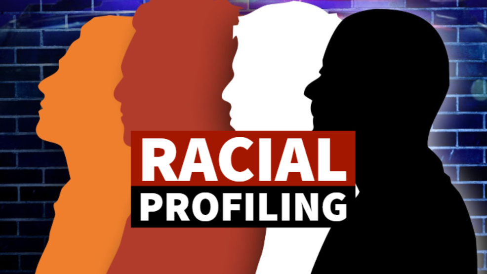
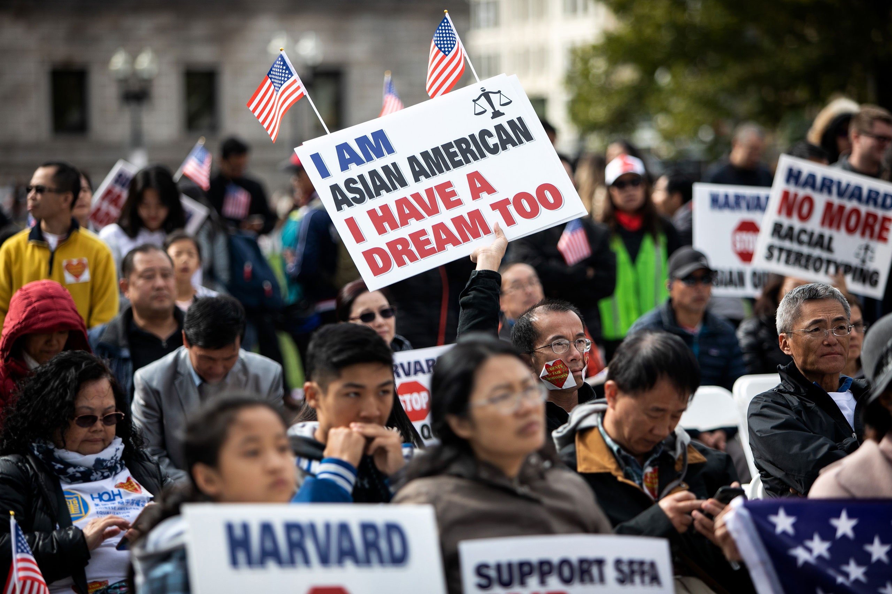
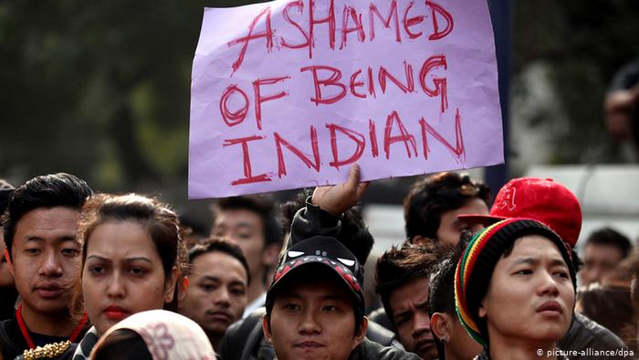

Racial Profiling

"Racial Profiling" refers to the discriminatory practice by law enforcement officials of targeting individuals for suspicion of crime based on the individual's race, ethnicity, religion or national origin. Criminal profiling, generally, as practiced by police, is the reliance on a group of characteristics they believe to be associated with crime. Examples of racial profiling are the use of race to determine which drivers to stop for minor traffic violations (commonly referred to as "driving while black or brown"), or the use of race to determine which pedestrians to search for illegal contraband.
Another example of racial profiling is the targeting, ongoing since the September 11th attacks, of Arabs, Muslims and South Asians for detention on minor immigrant violations in the absence of any connection to the attacks on the World Trade Center or the Pentagon.
Law enforcement agent includes a person acting in a policing capacity for public or private purposes. This includes security guards at department stores, airport security agents, police officers, or, more recently, airline pilots who have ordered passengers to disembark from flights, because the passengers' ethnicity aroused the pilots' suspicions. Members of each of these occupations have been accused of racial profiling.
Asian Racial Profiling

Asians, who, according to the U.S. census, number 10 million, or 4 percent of the population, have been victims of racial profiling as well. Wen Ho Lee, a Taiwanese American was targeted and suspected of espionage on the basis of his race. Memos by high-ranking FBI and Department of Energy officials acknowledged that Lee was singled out because he was Chinese, and eight similarly situated non-Chinese were not prosecuted.
In Seattle, Washington in July 2001 a group of 14 Asian American youth were stopped by police for jaywalking, claiming that they were kept against the wall for about an hour. The Seattle Times reported that one officer told them he had visited their country while in the army, and asked them repeatedly whether they spoke English. The paper also reported that U.S. Representative David Wu (D-Oregon) was detained entering the headquarters of the Department of Energy, and repeatedly.
In 2001, the Asian Freedom Project of Wisconsin issued a report that found the racial profiling of Hmong communities there, and included the testimony of adults, as well as boys and girls.
The Garden Grove (CA) Police Department settled a “gang” database racial profiling lawsuit by a group of young Asian Americans who said their civil rights were violated when officers photographed them as suspected gang members based merely on their ethnicity and clothing.
Indian Racial Profiling

Indigenous people ( Native Americans) call it “DWI,” with a new twist: “Driving While Indian.” According to the National American Indian Housing Council, there are 2.4 million Indians (including Eskimos and Aleuts) in the U.S. Indians complain about stops and searches by local police and sheriffs on roads leading to and from reservations.
In South Dakota, widespread reports of racial profiling led to hearings before the state legislature, where Indians testified about their being stopped and searched not only based on race but also on religious articles hanging from rearview mirrors, and regional license plates that identified them as living on reservations.
In June 2002 scores of Indians in the state's Bennett County complained to Department of Justice attorneys, alleging racial profiling at the hands of sheriffs there, including vehicular stops in the absence of reasonable suspicion, the administration of breathalyzer tests without reasonable suspicion, warrantless searches of homes and vehicles, and demanding to see drivers licenses and vehicle registrations while inside bars.
Worksite Racial Profiling
The Immigration and Naturalization Service has had a history of disproportionately targeting ethnic groups of color for undocumented labor violations. Like all law enforcement, INS agents must have sufficient evidence of wrong doing to establish probable cause or reasonable suspicion to arrest or detain. They may not carry out their duties in a racially or ethnically discriminatory manner. While ethnicity or nationality are obviously critical elements in immigration violations by themselves, without additional facts there is insufficient basis for law enforcement action.
The New York Times reviewed files of INS raids released as part of the settlement of a garment workers union selective enforcement suit against the agency in New York City. The settlement included a summary that Latinos were 96 percent of the 2,907 people arrested in the 187 worksite raids carried out by the INS in the district, fat greater than their representation in the city's legal or illegal population. This occurred even where the INS acknowledged that half the workers were not Latino but Asian, including undocumented immigrants.
And while some raids were based on informant information, 80 percent were initiated by agents who cited as primary evidence subjects' appearance or language without evidence of wrongdoing. Included were skin color, speaking Spanish or English with a Spanish accent, appearing to be of South or Central American descent and wearing clothing “not typical of North Americans.” Such characterizations in major American cities are common to born and naturalized citizens alike.